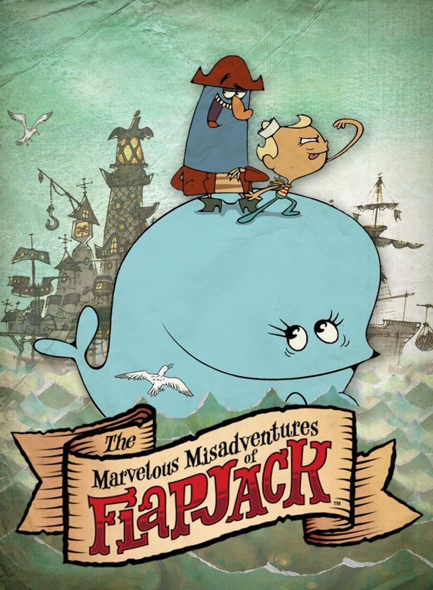

The Marvelous Misadventures of Flapjack
The Marvelous Misadventures of Flapjack เป็นการ์ตูนแอนิเมชันแนวผจญภัย–ตลก–แฟนตาซี เล่าเรื่องของ แฟลปแจ็ก เด็กชายผู้ไร้เดียงสาแต่เต็มไปด้วยจินตนาการ เขาอาศัยอยู่ในเมืองท่าชื่อ Stormalong Harbor และใช้ชีวิตร่วมกับ กัปตันแคนเคอร์รัส กะลาสีแก่ผู้โลภ ชอบโกหก และหมกมุ่นกับสมบัติ และ บับบี วาฬยักษ์ใจดี ที่เลี้ยงแฟลปแจ็กเหมือนลูก เรื่องราวในแต่ละตอนติดตามการผจญภัยสุดประหลาดของทั้งสามที่มักเริ่มจากความฝันอยากเป็นนักผจญภัยของแฟลปแจ็ก แต่กลับลงเอยด้วยเหตุการณ์วุ่นวาย พิลึกพิลั่น และมักจบแบบขมขื่นหรือเสียดสี อนิเมชันเรื่องนี้โดดเด่นด้วยงานภาพที่แปลกประหลาด สีสันจัดจ้าน ตัวละครหน้าตาประหลาด และอารมณ์ขันแบบดาร์กผสมความไร้เดียงสา เนื้อหาแฝงการเสียดสีสังคม ความโลภ ความเห็นแก่ตัว และความจริงอัน โหดร้ายของโลกผู้ใหญ่ ผ่านมุมมองของเด็กที่ยังเชื่อในความฝัน แม้จะเป็นการ์ตูนตลก แต่หลายตอนสะท้อนความหม่น เศร้า และความผิดหวัง ทำให้เรื่องนี้มีเอกลักษณ์เฉพาะตัวและถูกจดจำว่าเป็นการ์ตูนที่ทั้งตลก หลอน และลึกซึ้งในเวลาเดียวกัน
เพิ่มเติม